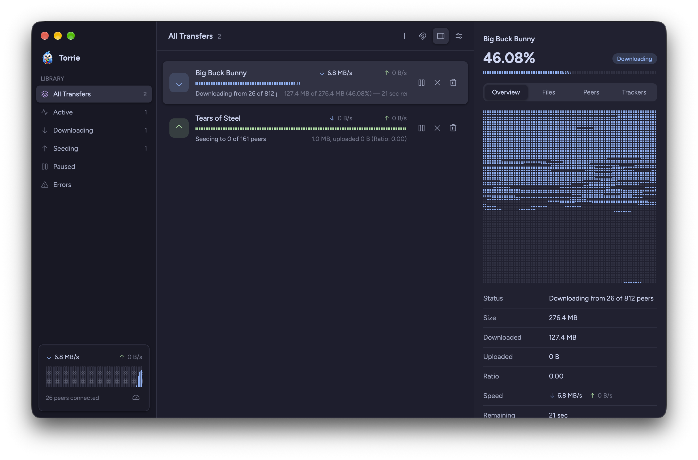
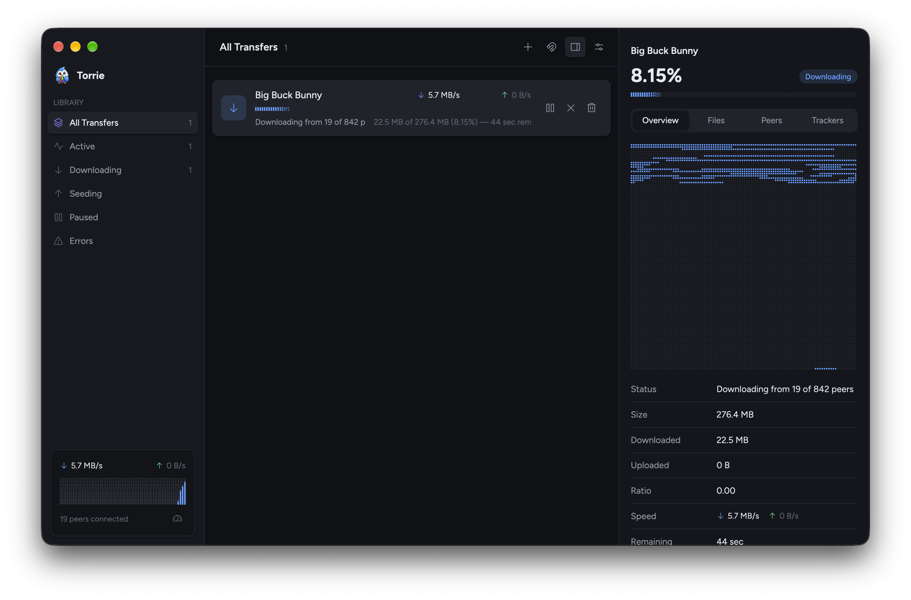
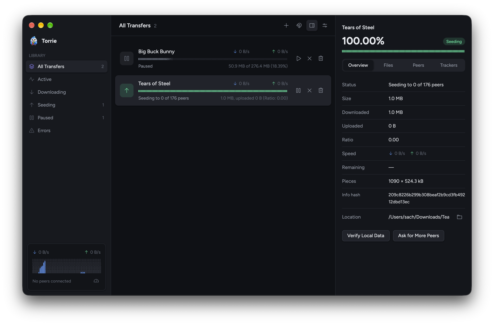
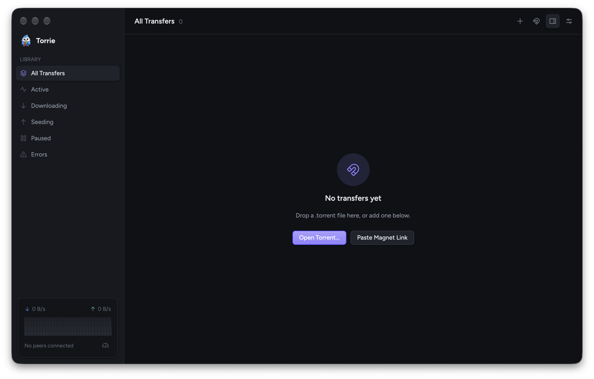
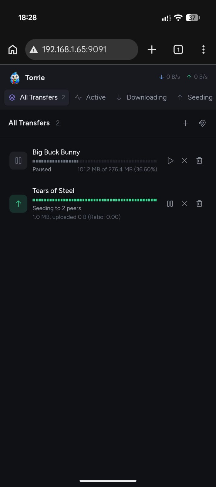

A fast, native client with plugins and a remote control API.
Built natively for macOS with Zed's GPU-accelerated UI framework and a fast Rust BitTorrent engine.
Drag in .torrent files, click magnet: links, or paste one with Cmd+U.
Pick what to download before and during a transfer, with per-file progress.
Press Cmd+I for an overview, files, peers with country flags, and trackers.
Set limits, plus an alternative set you can schedule by time and weekday.
Stream video and audio into IINA, VLC or your default player before it finishes.
Live speeds at a glance from the menu bar, and opening at login.
Add menu commands, Inspector tabs and settings, or run scripts when a download finishes.
Manage downloads from any browser on your phone or another computer.
Connect your own apps and scripts through the API.
Only installs notarized builds signed by the same developer.
Light and dark mode, built-in themes like Catppuccin and Gruvbox, or your own JSON theme.
DHT, UPnP, stop seeding at a ratio, and fast resume.
Every transfer at a glance, with the Inspector one click away.




Open the built-in web remote in any browser, or connect another app with the settings shown here.
http://<your Mac's IP>:9091 in any browser and sign in with the password shown in Settings.Away from home? Reach it over a VPN. API docs →

Host 192.168.1.20 Port 9091 Username anything Password shown in Torrie's Settings
A plugin is just a folder with a plugin.json. Add commands to the Plugins menu, tabs to the Inspector, options to Settings, or run a script when a download finishes.
torrent-added, torrent-done and torrent-done-seeding..torrieplugin package with a one-click torrie://install link.{
"id": "media-organizer",
"name": "Media Organizer",
"version": "1.0.0",
"description": "Renames finished movies for Plex",
"hooks": {
"torrent-done": "on-done.sh"
}
}
The short answers.
| Requirements | macOS 12 or later. |
| Price | Free and open source under the MIT license. Read the code, report issues and send fixes on GitHub. |
| Default app | Move Torrie to Applications and launch it once to open .torrent files and magnet: links. |
| Settings | Saved to ~/Library/Application Support/Torrie/settings.json. |
| Built with | librqbit, GPUI, Tokio + axum, tray-icon, objc2, resvg and maxminddb. |